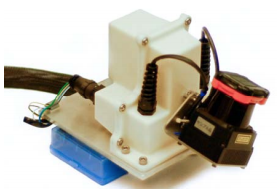
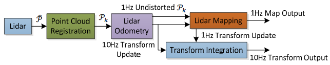
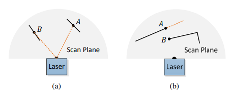
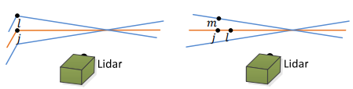
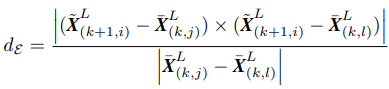
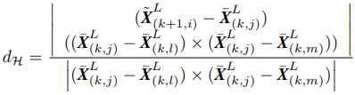
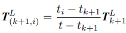
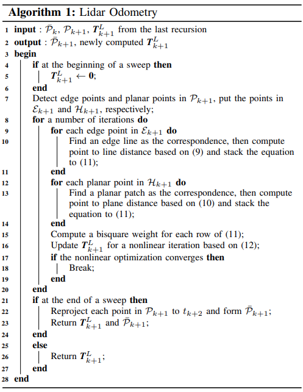

[2014 RSS] LOAM
2014 RSS Paper on Lidar Odometry
Researchers at Carnegie Mellon University. First Author: Ji Zhang
저자 Ji Zhang님은 현재 CMU Field Robotics Center에 Systems Scientist로 재직중이시다.
LOAM의 geometrical feature matching 기법은 많은 알고리즘들에 사용될 정도로 efficient함을 보여줬다. (LeGO-LOAM, LIO-SAM 등)
- Lidar 기반 odometry 추정 및 Map 생성 알고리즘을 위한 geometrical feature extraction & matching.
- Odometry 추정 및 Map generation으로 이루어진 2 stage 기법.
Related work
라이다는 카메라와는 달리(사실 카메라고 rolling shutter의 경우 distortion이 생기지만..) 하나의 스캔이 동시에 이뤄지지 않기에 정확한 point cloud를 얻기 위해선 external motion에 대한 compasation이 요구된다. 기존 연구들에서는 IMU, GPS/INS 등 odometry sensor 정보를 이용하여 deskew 및 state estimation에 활용이 되었음.
Lidar intensity값을 통해 visual matching으로 motion을 추정한 경우도 있음
Velocity model의 경우 constant velocity 또는 Gaussian process를 이용한 경우들이 있음 (본 논문은 constant velocity model 사용)
본 논문과 가장 유사한 내용 : Bosse & Zlot의 경우 Geometrical structure matching기법을 이용하였으며, IMU와 incorporation함 (대표적인 예: Zebedee). 하지만 Map 생성에 시간이 오래 걸림
- 본 논문의 map 생성은 Bosse & Zlot의 알고리즘을 통해 얻어진 map과 비슷하나 real-time으로 생성 가능.
- Lidar scan pattern 및 point cloud distribution을 이용함
- Odometry 및 mapping을 위한 Feature matching은 빠르고 정확하도록 설계됨
Notation & task description
Lidar가 pre-calibrated되어있고, angular & linear velocity는 smooth하고 continuous하다고 가정 (이 가정은 IMU 사용을 통해 제거될 수 있음)
- right uppercase : coordiante system
- Sweep은 lidar가 one time of scan converage를 완료할때를 뜻함 (-90~90 다 돌았을때인듯?)
- right subscription : indicate the sweep
- \(\mathcal{P}_k\) : sweep \(k\)를 통해 얻어진 point cloud
- Lidar coordinate system : \(\{L\}\)
- \(\mathcal{P}_k\)의 point \(i\)의 \(\{L_k\}\)에서의 coordinate는 \(\mathbf{X}_{(k,i)}^L\)로 표기됨
- World coordinate system : \(\{W\}\)
Problem: 주어진 lidar cloud sequence에 대해 각 sweep에서의 egomotion을 계산하고 지나간 환경에 대한 map 생성
System Overview
Hardware Overview

Hokuyo 2D laser scanner를 사용하였으며 -90도에서 90도까지 180도/s 로 돌아 전방향 coverage를 갖음 (하지만 이런 라이다 종류에만 적용이 제한된건 아님)
Software Overview

- Laser Scan \(\hat{\mathcal{P}}\) 은 Lidar coordinate system \(\{L\}\)에 register되어 sweep \(k\)를 통해 \(\mathcal{P}_k\)를 형성
- \(\mathcal{P}_k\)는 두가지의 알고리즘으로 처리됨
- 연속적인 두 sweep간의 point cloud를 통해 motion estimation을 함
- 추정된 motion을 통해 \(\mathcal{P}_k\)의 distortion correction을 진행 (10Hz)
- Output은 Lidar mapping에서 undistorted cloud를 map과 matching함 (1Hz)
- 연속적인 두 sweep간의 point cloud를 통해 motion estimation을 함
- 두 알고리즘을 통해 얻어진 pose transforms를 융합해 transform output를 생성 (10Hz)
Lidar Odometry
Feature Point Extraction
처음에는 1 sweep으로 만들어진 point cloud에 대해서 nearest point를 통해 얻어지는 줄 알았지만, 1 scan에서 feature point를 뽑는다.
1 sweep point cloud \(\mathcal{P}_k\)에 대해 (1 sweep은 lidar 1 scan이 아니라 2번째 axis에 대한 -90에서 90도, 90에서 -90도 회전할동안을 뜻함) \(i\)를 point중 하나라 하고, \(\mathcal{S}\)를 \(i\) 의 전후로 측정된 point(연속적인 배열)들이라 하면 smoothness는 다음과 같이 정의된다.
\[c = \frac{1}{\lvert S \rvert \cdot \lVert \mathbf{X}_{(k,i)}^{L} \rVert} \lVert \sum_{j \in \mathcal{S}, j \neq i} (\mathbf{X}_{(k,i)}^L - \mathbf{X}_{(k,j)}^L) \rVert\]여기서 \(\lvert S \rvert\)가 의미하는 바를 모르겠다…
여기서 \(c\)가 어떤 threshold를 넘으면 coner point, 그리고 어떤 threshold보다 낮으면 planar point로 명명한다. 너무 많을 것을 대비해 scan에 대해 정확히 4분할 하여 각 분할에 대해 최대 2 edge, 4 planar point를 가질 수 있게 한다. (아마 \(c\)값으로 판단할듯)
여기서 reduntent한 point를 고르지 않도록 한다.

- Avoid points whose surrounded points are selected
- Avoid points on local planar surfaces that are roughly parallel to the laser beams
- Unreliable하기 때문에
- Avoid points on that are on boundary of occluded surfaces
- Occulusion으로 인해 생긴 fake edge일 수 있기에
Finding feature point correspondence
Sweep \(k\)의 시작 시간을 \(t_k\)라 하면 sweep \(k\)에 얻은 point cloud \(\mathcal{P}_k\)는 \(t_{k+1}\)에 “reprojected”된다. (여기선 데이터를 얻은 시간을 표기할 때 시간을 reproject했다라고 표현한 것 같다.) 이 reproject된 point cloud는 \(\bar{\mathcal{P}}_k\)로 표기한다. 이 \(\bar{\mathcal{P}}_k\)와 새로 얻어진 point cloud \(\mathcal{P}_{k+1}\)간의 매칭을 통해 lidar motion을 진행한다.
여기까지 읽으면서 생각이 드는게, \(\mathcal{P}\)는 scan에 따라 점들이 추가되는것이고, 하나의 sweep이 끝난 것을 \(\bar{\mathcal{P}}\)로 표현하는 것 같다. (jekyll mathjack에선 잘 안보이는데 두번째는 bar가 추가됨)
여튼, \(\mathcal{P}_{k+1}\)의 edge와 planar feature points의 set을 각각 \(\mathcal{E}_{k+1}\)와 \(\mathcal{H}_{k+1}\)이라 하자.
\(\mathcal{P}_{k+1}\)에서 \(\mathcal{E}_{k+1}\)와 \(\mathcal{H}_{k+1}\)가 scan에 따라 점차 늘어나게 되는데, 현재 추정된 transform에 따라 초기 scan의 coordinate에 reprojection된 것을 \(\tilde{\mathcal{E}_{k+1}}\)와 \(\tilde{\mathcal{H}}_{k+1}\)라 하자.
\(\bar{\mathcal{P}}_k\)는 3D KD-tree에 저장이 되어 \(\tilde{\mathcal{E}}_{k+1}\)와 \(\tilde{\mathcal{H}}_{k+1}\)와 빠른 nn search를 수행한다.
Correspondence를 찾기 위해 선택되는 점은 다음 그림과 같다. (사실 좀 이해하기 어렵게 그려져있음)

위의 그림에서 주황색은 \(\bar{\mathcal{P}}_k\), 파란색은 \(\mathcal{P}_{k+1}\) 위의 점이다.
Edge correspondence (2개의 점으로 구성됨)
- \(i \in \tilde{\mathcal{E}}_{k+1}\)에 대해서 같은 scan이 아닌(연속적인?) \(i\)와 nn 인 \(j, l \in \bar{\mathcal{P}}_{k}\)을 찾는다.
- \(j, l\)을 smoothness 계산을 통해 edge임을 확인한다.
Plane correspondence (3개의 점으로 구성됨)
- \(i \in \tilde{\mathcal{H}}_{k+1}\)에 대해서 \(j, l, m \in \bar{\mathcal{P}}_{k}\)을 찾되, \(j\)는 \(i\)의 nn, \(l\)은 \(j\)와 same scan에서, \(l\)은 \(j\)의 two consecutive scan상에서 찾는다. (non-colinear를 보장하기 위해)
- \(j, l, m\)의 smoothness 계산을 통해 planar임을 확인 (근데, 그냥 smoothness를 다시 계산하기 않고 같이 저장하면 안되나?)
각 Distance to correspondence는 점과 선과의 거리, 점과 평면간의 거리로 계산됨
- Edge feature point distance:

- Planar feature point distance:

Motion Estimation
Lidar motion이 constant angular & linear velocity로 modeling되어있다는 가정을 통해 pose transfrom을 linear interpolation을 하여 각 점에 대해 pose transform을 할 수 있다.
\(\mathbf{T}_{k+1}^L = [t_x, t_y, t_z, \theta_x, \theta_y, \theta_z]\)을 \([t_{k+1}, t]\)의 lidar의 6-DOF tranform이라 하자.
앞서 말한 것처럼 linear transform에 따라 다음과 같이 된다.

Angle 부분에서는 조금 이해가 안되는 게 있긴 한데.. 여튼, 그냥 일반적인 linear interpolation하는게 아니라 rotation을 따로 분리해서 rotation direction까지 고려는 해주는 것 같다.
나머지 부분은 적으려다가, 그냥 optimization하는 방식이라 생략한다. 대충 위의 식을 edge 및 planar feature distance에 넣어서 jacobian을 계산해 optimize하는 내용이다.
Lidar Odometry Algorithm

Lidar Mapping
기존의 mapping 결과(여기선 point cloud로 map 생성) \(\mathcal{Q}_k\)와 앞선 motion estimation으로 deskew된 결과 \(\tilde{\mathcal{Q}}_{k+1}\)를 matching함으로서 mapping이 이루어진다.
여기서 \({\mathcal{Q}}_{k+1}\)와 intersect(어떻게 intersection을 측정하는지 알려줬으면 ㅜ)하는 \(\mathcal{Q}_k\)를 3D KD-tree로 만들어 edge point와 planar point간 매칭을 하는데, 여기서는 기존보다 더 나아가 eigenvalue 및 eigen vector를 계산하여 3차원에서의 edge 및 plane에 대한 구분을 한다. 나머지는 비슷한듯.
이후 map은 voxelization을 통해 downsize된다.
아무래도 여기선 smoothing하지는 않으니까, 기존 pose를 고친다기보단 mapping시 transpose를 한번 고쳐주는 방식으로 pose estimation이 합성된다.
Experiments
TBW